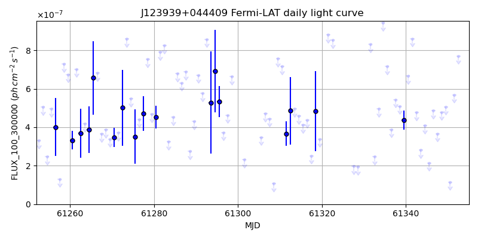
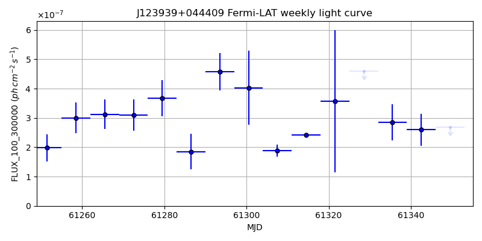
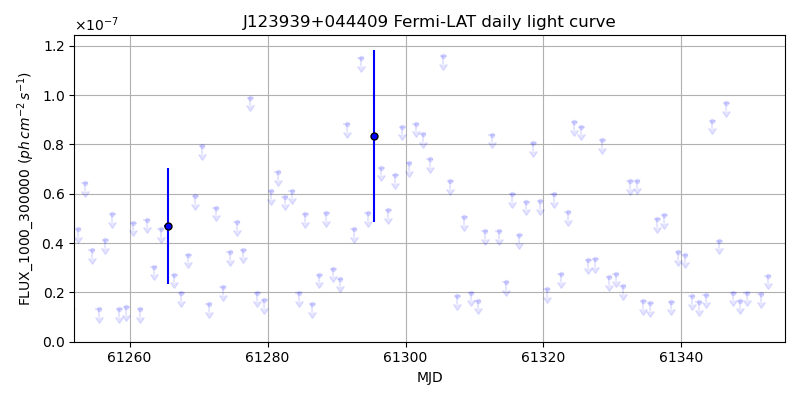
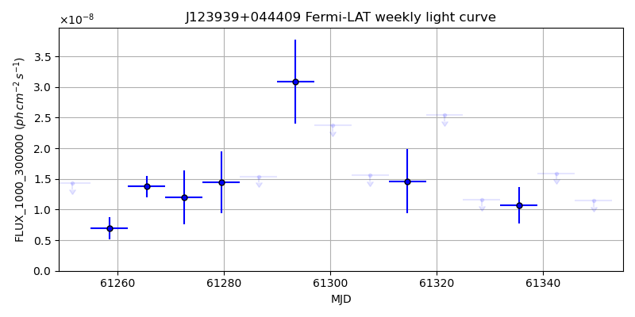

LAT Lightcurve site: https://fermi.gsfc.nasa.gov/ssc/data/access/lat/msl_lc/source/J123939p044409
NED: Query
Time of last update of this page: UT: 2026-11-13 16:25 (MJD: 61357.685)
| Property | Value |
|---|---|
| R.A. | 12:39:36.00 |
| Dec. | 4:42:00.0 |
| z | 0.000 |
| 3FGL SpectrumType | |
| 3FGL PL Index | -1.00 |
| 3FGL Flux_100_300000 | -1.00e+00 |
| 3FGL Flux_1000_300000 | -1.00e+00 |
| 3FGL Flux >200 GeV | -1.00e+00 |
| 3FGL Extrap. Crab >200 GeV | -1.00 |
| 3FGL Flux After EBL Absorption >200GeV | -1.00e+00 |
| 3FGL EBL Crab Fraction >200GeV | -1.00 |

| MJD | dMJD | Flux | dFlux | Frac3FGL | FracCrab>200GeV | EBLFracCrab>200GeV |
|---|---|---|---|---|---|---|
| 61348.50 | 0.50 | 4.79e-07 | 0.00e+00 | 0.00 | 0.00 | -0.00 |
| 61349.50 | 0.50 | 5.07e-07 | 0.00e+00 | 0.00 | 0.00 | -0.00 |
| 61350.50 | 0.50 | 1.15e-07 | 0.00e+00 | 0.00 | 0.00 | -0.00 |
| 61351.50 | 0.50 | 5.69e-07 | 0.00e+00 | 0.00 | 0.00 | -0.00 |
| 61352.50 | 0.50 | 7.70e-07 | 0.00e+00 | 0.00 | 0.00 | -0.00 |

| MJD | dMJD | Flux | dFlux | Frac3FGL | FracCrab>200GeV | EBLFracCrab>200GeV |
|---|---|---|---|---|---|---|
| 61321.50 | 3.50 | 3.57e-07 | 0.00e+00 | 0.00 | 0.00 | -0.00 |
| 61328.50 | 3.50 | 4.60e-07 | 0.00e+00 | 0.00 | 0.00 | -0.00 |
| 61335.50 | 3.50 | 2.85e-07 | 0.00e+00 | 0.00 | 0.00 | -0.00 |
| 61342.50 | 3.50 | 2.60e-07 | 0.00e+00 | 0.00 | 0.00 | -0.00 |
| 61349.50 | 3.50 | 2.68e-07 | 0.00e+00 | 0.00 | 0.00 | -0.00 |

| MJD | dMJD | Flux | dFlux | Frac3FGL | FracCrab>200GeV | EBLFracCrab>200GeV |
|---|---|---|---|---|---|---|
| 61348.50 | 0.50 | 1.66e-08 | 0.00e+00 | 0.00 | 0.00 | -0.00 |
| 61349.50 | 0.50 | 1.99e-08 | 0.00e+00 | 0.00 | 0.00 | -0.00 |
| 61350.50 | 0.50 | -1.00e+00 | 0.00e+00 | 0.00 | 0.00 | -0.00 |
| 61351.50 | 0.50 | 1.94e-08 | 0.00e+00 | 0.00 | 0.00 | -0.00 |
| 61352.50 | 0.50 | 2.67e-08 | 0.00e+00 | 0.00 | 0.00 | -0.00 |

| MJD | dMJD | Flux | dFlux | Frac3FGL | FracCrab>200GeV | EBLFracCrab>200GeV |
|---|---|---|---|---|---|---|
| 61321.50 | 3.50 | 2.54e-08 | 0.00e+00 | 0.00 | 0.00 | -0.00 |
| 61328.50 | 3.50 | 1.16e-08 | 0.00e+00 | 0.00 | 0.00 | -0.00 |
| 61335.50 | 3.50 | 1.07e-08 | 0.00e+00 | 0.00 | 0.00 | -0.00 |
| 61342.50 | 3.50 | 1.59e-08 | 0.00e+00 | 0.00 | 0.00 | -0.00 |
| 61349.50 | 3.50 | 1.15e-08 | 0.00e+00 | 0.00 | 0.00 | -0.00 |
--------------------------------------------------------- Using user-supplied coords: 12:39:36.00 4:42:00.0 2000 --------------------------------------------------------- FLWO UT night of: 2026-11-14 Local Sid. @ Midnight: 03:09 Sunset (-15.0) (local, UT): 18:35 01:35 Sunrise (-15.0) (local, UT): 05:42 12:42 Moonrise (local, UT): Moonset (local, UT): 20:50 03:50 Moon phase: 0.22 --------------------------------------------------------- AzTime LSID UT Obj_el Obj_az Mn_el Mn_az Sep. --------------------------------------------------------- 18:35 21:44 01:35 -34.5 302.5 20.1 218.2 96.7 19:05 22:14 02:05 -39.7 309.3 16.0 223.7 96.8 19:35 22:44 02:35 -44.3 317.2 11.6 228.6 97.0 20:05 23:14 03:05 -48.3 326.4 6.9 233.2 97.2 20:35 23:44 03:35 -51.3 337.0 2.0 237.3 97.4 21:05 00:14 04:05 -53.2 348.9 -2.2 241.2 97.6 21:35 00:44 04:35 -53.8 1.5 -9.0 244.8 97.8 22:05 01:14 05:05 -52.9 14.0 -14.6 248.2 98.1 22:35 01:44 05:35 -50.7 25.6 -20.4 251.4 98.3 23:05 02:14 06:05 -47.4 35.9 -26.2 254.5 98.6 23:35 02:44 06:35 -43.3 44.8 -32.1 257.5 98.8 00:05 03:14 07:05 -38.5 52.4 -38.1 260.6 99.1 00:35 03:45 07:35 -33.2 59.0 -44.2 263.8 99.4 01:05 04:15 08:05 -27.5 64.7 -50.2 267.1 99.7 01:35 04:45 08:35 -21.6 69.8 -56.3 270.9 100.0 02:05 05:15 09:05 -15.6 74.4 -62.4 275.3 100.4 02:35 05:45 09:35 -9.3 78.7 -68.4 281.1 100.7 03:05 06:15 10:05 -1.8 82.8 -74.2 289.9 101.0 03:35 06:45 10:35 3.6 86.7 -79.6 306.2 101.4 04:05 07:15 11:05 9.8 90.7 -83.2 343.5 101.7 04:35 07:45 11:35 16.2 94.7 -82.1 35.1 102.0 05:05 08:15 12:05 22.5 98.9 -77.4 61.2 102.4 05:35 08:45 12:35 28.8 103.4 -71.8 73.4 102.7 05:42 08:52 12:42 30.1 104.5 -70.5 75.2 102.8 --------------------------------------------------------- Dark hours >55 deg.: 0.00